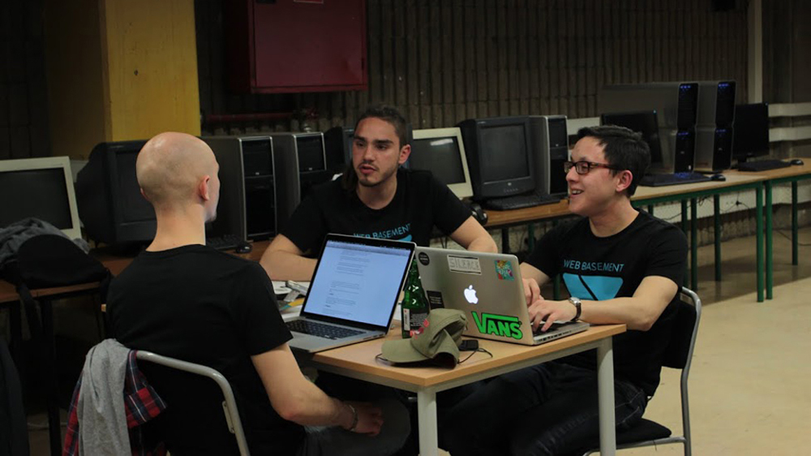
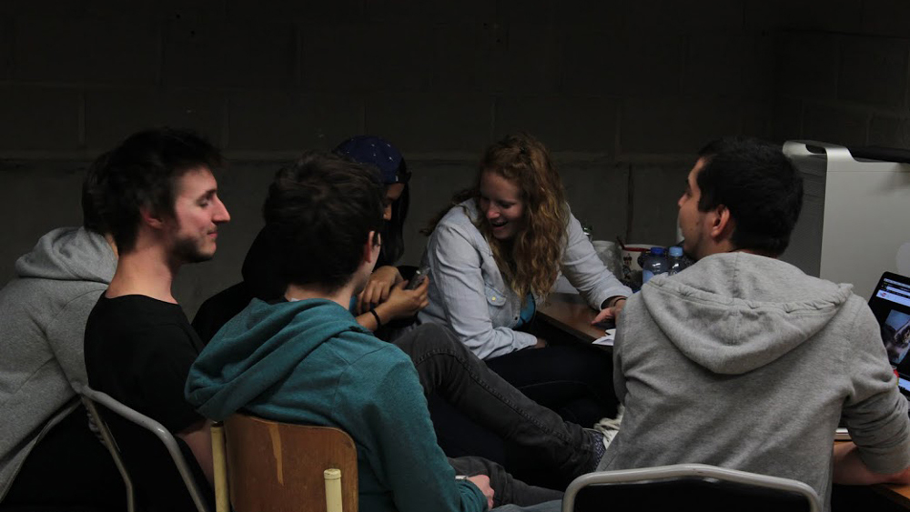
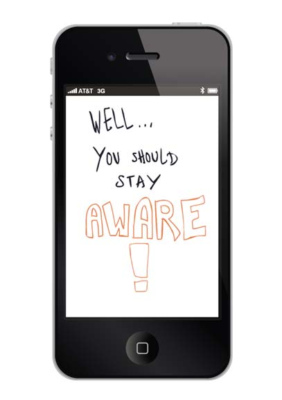
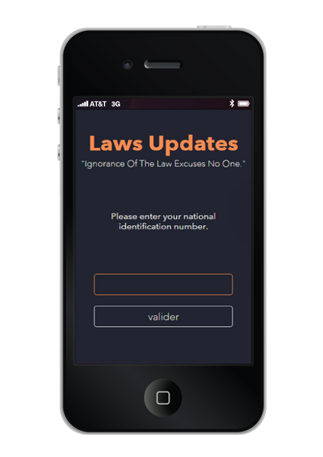
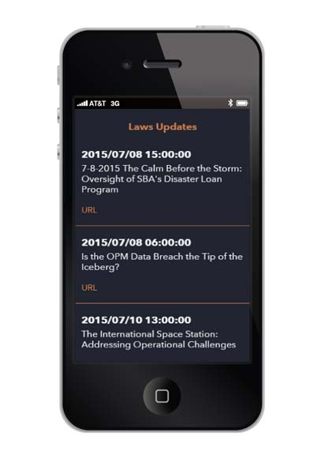
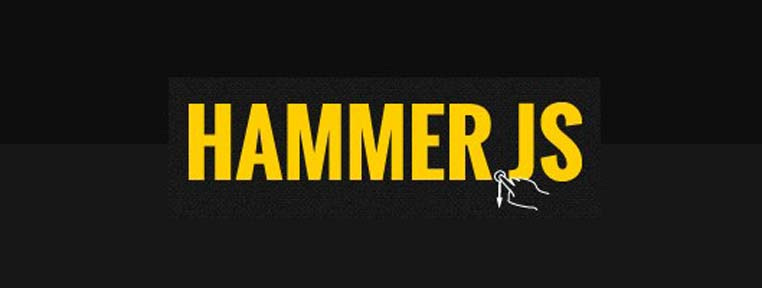
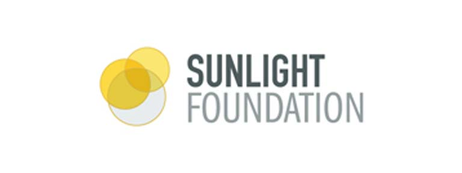
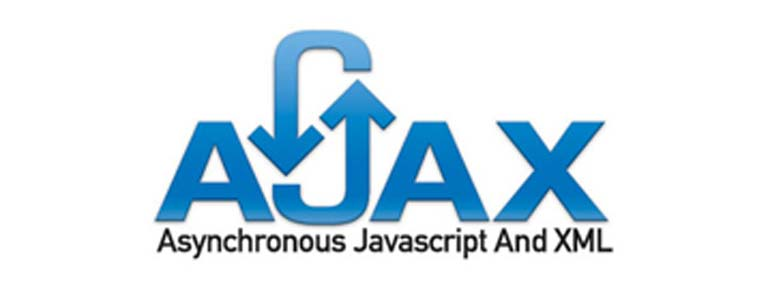

Un événement
le Web Bassement est un événement qui a lieu durant les portes ouvertes, il a pour but de montrer les facettes de la section web. Les participants de la section web, majoritairement constitués de 2èmes années, ont pour défi de construire un site web sur un sujet donné au début de l'événement. Ce site va être soumis à un jury et à un public.
voir le site de l'événement- 
- 
nul n'est censé ignorer la loi
Une idée
Cette année l'objectif était de réfléchir à une autre façon d'exprimer un mécontentement citoyen, autre que celui de la grève.
Mon équipe était composée de Saniya Moustaquim , de Maxime Bartier ainsi que de moi-même .Nous nous sommes rendu compte que la législation belge évolue ; sans pour autant impliquer le citoyen dans la décision finale.
Cette problématique en tête nous avons pensé à une application permettant de tenir les utilisateurs au courant des dernières lois votées ; tout en leur permettant d'émettre une opinion sur la question.
Un retour à la démocratie directe grâce à une application.
- 
- 
- 
Des techniques
Pour mener à bien la réalisation de notre web application je me suis documenté sur l'API Sunlight fundation fundation qui contient beaucoup d'informations au sujet des lois américaines.
À l'aide d'une requête Ajax , je récupère un flux d'actualité par rapport aux lois votées en direct.
Dernière étape de la web application, celui d'ajouter la gestion d'évènements mobiles à l'aide de la bibliothèque Hammer.js ; permettant ainsi d'intégrer la notion du "swipe" pour donner un vote positif ou négatif à la loi présentée.
- 
- 
- 
Une mise en situation
On avait besoin d'expliquer le concept aux nouveaux utilisateurs. Pour cela Saniya Moustaquim a créé une vidéo afin donner une réponse à ce besoin.
Un résultat
Le projet est disponible et vous pouvez d'ores et déja. Vous pouvez maintenant le tester afin de pouvoir commencer à donner votre avis.